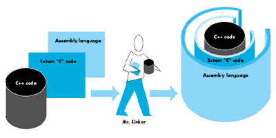

Most developers write device drivers in assembly language, rarely considering a
higher level, object-based language such as C++ for such a job. This article describes
some of the advantages of higher level languages over assembly and warns of some of
the gotchas you may encounter if you write a driver in C++. An example of a device
driver written in C++ follows a brief discussion of drivers in general.
When you think of writing a device driver, your first reaction may be, "But I haven't
brushed up on assembly language in some time." After taking a deep breath, you think
of another approach: "Why can't I use a high-level language?" You can. One such
language is C++.
In comparison with standard C, C++ offers some definite advantages, including ease of
maintenance, portability, and reusability. You can encapsulate data and functions into
classes, giving future coders an easier job of maintaining and enhancing what you've
done. And you can take advantage of most (but not all) of the powerful features of C++
when you write stand-alone code.
You will run into a few gotchas, including the fact that polymorphism is available only
if you do some extra work (for a definition of polymorphism, seedevelop,Issue 2, page
180). Because the virtual tables (vTables) reside in the jump-table segment, a
stand- alone code resource can't get at the vTables directly (more on this topic later).
You also have to deal with factors such as how parameters are passed to methods, how
methods are called, how you return to the Device Manager, how you compile and link
the DRVR resource, and how the DRVR resource is installed when the machine starts
up. We'll tackle some of these obstacles as we work through the sample device driver
presented later in this article.
WHY C++?
When someone suggests writing a device driver in anything other than assembly
language, the common reaction is, "But you're talking to a device! Why would you
want to use C++?"
For communication with devices, assembly language admittedly gets the job done in
minimal time, with maximum efficiency. But if you're writing something where code
maintenance, portability, and high-level language functionality are just as important
as speed and efficiency, a higher level language is preferable. Not all device drivers
actually communicate with physical devices. Many device drivers have more esoteric
functions, such as interapplication communication, as in the sample driver in this
article. (In fact, DAs are of resource type DRVR and behave exactly the same way
device drivers behave. DAs are even created the same way.) For these kinds of device
drivers, C++ is a great language to use because you can take advantage of all the
features of a high- level language, plus most of the object-based features of C++.
Finally, device drivers have some nice features that make them appealing for general
usage:
Good examples of nondevice drivers are the .MPP (AppleTalk ®) driver and the .IPC
(A/ROSETMinterprocess communication) driver. Both these drivers provide pretty
high-level functionality, but neither directly manipulates a device as such (except for
the very low-level AppleTalk manipulations of communication ports). Of course, if
you were writing code to communicate quickly and efficiently to a modem, for example,
assembly language might be the better choice, depending on your need for efficiency
and timing. For the purposes of this article, any reference to a device driver includes
both types of drivers.
Clearly, higher level languages have a place, but what about object-based languages?
Object-based languages provide a great framework for encapsulation of data and
functions and hence increase the ease of maintenance and portability (if used
elegantly). One question still remains: Why C++?
Notables such as Bjarne Stroustrup and Stanley Lippman have pointed out some of the
advantages C++ offers over conventional high-level languages. C++ offers great
extensions, such as operator and function overloading, to standard C. C++ is much
more strongly type checked than C, so it saves us programmers from ourselves. C++
classes offer a way to encapsulate data--and functions that operate on the
data--within one unit. You can make different elements and functions "private" to
objects of only one class or "public" to objects of every type. The private and public
nature of data and member functions allows you to accomplish real encapsulation.
| C++ | Assembly Language | |
| Pros | Portable | Fast |
| Reusable | Efficient | |
| Easy to maintain | Compact | |
| Object-based design | Direct access to CPU | |
| High-level language features | ||
| Data encapsulation | ||
| Cons | Three separate source files | Not portable |
| multiple compiles | Hard to maintain | |
| Speed inefficient | Lacking high-level language | |
| Polymorphism difficult | features such as loops | |
| in stand-alone code | and IF-THEN-ELSE |
As noted, one valuable feature of C++, polymorphism, is not readily available when
you write a device driver in C++. Other limitations involve working with assembly
language, possible speed sacrifices, work-arounds for intersegment calls, and mangled
procedure names.
POLYMORPHISM
Because a device driver is a stand-alone code resource, there is no "global" space or
jump table. C++'s virtual function tables (vTables), which are the means to the
polymorphism end, live in an application's global space. The loss of virtual tables is a
limitation of stand-alone code, not a limitation of C++. Patrick Beard's article,
"Polymorphic Code Resources in C++" (this issue), shows one way to work around
this limitation. The work-around takes some extra work and is dependent on the
current implementation of CFront, which may make future compatibility a problem.
In the interests of clarity and compatibility, I have chosen not to use polymorphism
for the example in this article.
ASSEMBLY-LANGUAGE MUCK
Another difficulty is that we have to get our hands assembly-language dirty. The
Device Manager is going to call the device driver with a few registers pointing to
certain structures, and we'll have to put those on the stack so the C++ routines can get
to them. Specifically, A0 points to the parameter block that is being passed, and A1
has a handle to the Device Control Entry for the driver. Having to do some assembler
work is a limitation of the operating system; the toolbox doesn't push the parameters
onto the stack (now if there were glue to do that--).
These registers must somehow make their way onto the stack as parameters to our
routines because procedures take their parameters off the stack. When we've finished,
we also have to deal with jumping to jIODone or plain RTSing, depending on the
circumstances. For the simple driver shown in the example, we will in reality almost
always jump via jIODone when finished with our routines. But, for drivers that
wish to allow more than one operation at a time, the Prime,Control, and Status
calls must return via an RTS to signal the Device Manager that the request has not
been completed. The driver's routines should jump to jIODone only when the request
is complete.
We must also decide whether or not to call a C++ method directly from the assembly
language "glue." If we call the method directly, we have to put the "this" pointer on the
stack because it's passed implicitly to all object methods. We also have to use the
"mangled" name generated by the compiler and used by the linker. (If you haven't had
the opportunity to see mangled names, you'll find they're a joy to figure out without
the help of our friend Mr. Unmangle.) So, if we choose to call extern C functions, as
the example does, we run into yet another level of "indirection" before we get to the
real meat of the matter.
SPEED
Some might say we sacrifice speed as well as efficiency--and they're correct. In
general, compilers can't generate optimally speed-efficient code. They can come close,
but nothing even approaches how the human mind tackles some tricky machine-level
issues. Thus, we're at the mercy of the compiler--the loss of speed is the result of the
compiler's inefficiency.
You'll probably find the sample driver presented in this article pretty inefficient. But
the trade-off is acceptable because speed isn't important in this case, and you can use
all the features of an object-based language. In fact, in most instances you can limit
assembly language to a few routines, which must be tightly coded, and use C++ for the
rest.
MANGLED IDENTIFIERS
If you're familiar with C++, you've undoubtedly seen the visions of unreadability
created by CFront. But, if you're still unfamiliar with C++ in practice, here's an
explanation. CFront is simply a preprocessor that creates C code, which is passed to
the C compiler. So CFront has to somehow take a function of the form
TDriver::iacOpen(ParmBlkPtr aParmBlkPtr)
and create a C function name the C compiler can understand. The problem is that when
the linker complains, it will use the mangled name, which is hard to decipher.
Here's how it looks:
from MPW Shell document
unmangle iacOpen__7TDriverFP13ParamBlockRec Unmangled symbol: TDriver::iacOpen(ParamBlockRec*)
It's clear why these names are referred to as mangled and unmangled. Fortunately, the
unmangle tool provided with MPW allows you to derive the unmangled name from the
mangled.
The sample driver that follows illustrates some of the issues involved in writing a
device driver in general, and specifically in C++. The code is in the folder labeled C++
Driver on the Developer Essentials disc.
INTERAPPLICATION COMMUNICATION
The sample driver performs one basic function--interapplication communication
(IAC)--under System 6. Under System 7 the services of this sample driver aren't
necessary because IAC is built into the system. But the concepts presented here are
still sound, and the driver works as well under System 7 as it does under System 6.
The driver is installed at Init time with code that walks through the unit table looking
for a slot.
CLASS STRUCTURE
The classes are fairly straightforward, serving as an example of how to use C++ to
encapsulate data with methods without getting into some gnarly class hierarchies that
would only obfuscate the point (and that aren't yet possible with stand-alone code).
Two classes suffice:TDriver and TMessage. TDriver handles all the driving; it
responds to each control and status call defined and handles opening and closing the
driver. It keeps two simple data structures--an array of application names that have
registered and an array of TMessagepointers that need to be received. TMessage
handles the messages--who they're from, who they're addressed to, and what the
message is. I think you'll find the declarations easy reading.
from TDriver.h
class TDriver: public HandleObject {
public:
// Constructor and destructor.
TDriver();
~TDriver();
/* Generic driver routines. These are the only public interfaces
* we show to the world. */
OSErr iacOpen(ParmBlkPtr oParmBlock);
OSErr iacPrime(ParmBlkPtr pParmBlock);
OSErr iacControl(ParmBlkPtr cntlParmBlock);
OSErr iacStatus(ParmBlkPtr sParmBlock);
OSErr iacClose(ParmBlkPtr cParmBlock);
private:
// Control Routines.
/* RegisterApp takes the string in iacRecord.appName and finds
* a slot in the array for the name (hence it "registers"
* the application). SendMessage sends a message from one
* application to another (as specified by the iacRecord fields).
* ReceiveMessage puts the message string into the
* iacRecord.msgString field if there's a message for the
* requesting application. UnregisterApp removes the
* application's name from the array (hence the application is
* "unregistered"). */
short RegisterApp(IACRecord *anIACPtr);
short SendMessage(IACRecord *anIACPtr);
short ReceiveMessage(IACRecord *anIACPtr);
short UnregisterApp(IACRecord *anIACPtr);
// Status Routines
/* WhosThere returns the signature of other applications that
* have registered.
* AnyMessagesForMe returns the number of messages waiting for
* the requesting application in iacRecord.actualCount. */
void WhosThere(IACRecord *anIACPtr);
Boolean AnyMessagesForMe(IACRecord *anIACPtr);
// Message array handling routines.
/* GetMessage gets the TMessPtr in fMessageArray[signature].
* SetMessage sets the pointer in fMessageArray[signature] to
* aMsgPtr. */
TMessPtr GetMessage(short signature);
void SetMessage(short index, TMessPtr aMsgPtr);
// AppName array handling routines.
/* GetAppName gets the application name in
* fAppNameArray[signature]. SetAppName sets the application
* in fAppNameArray[signature] to anAppName. */
char *GetAppName(short signature);
void SetAppName(short signature, char *anAppName);
/* We keep an array of applications that can register with the
* driver. I've arbitrarily set this at 16. We also keep an array
* of TMessage pointers to be passed around. This is also
* arbitrarily set at 16. In the future, I'd probably implement
* this as a list of messages. */
char fAppNameArray[kMaxApps] [255];
TMessPtr fMessageArray[kMaxMessages];
};
from TMessage.h
class TMessage {
public:
/* Constructor and destructor. Constructor will build the
* message with the appropriate data members passed in. */
TMessage(char *message, short senderSig, short receiverSig);
~TMessage();
/* Two Boolean functions that simply query the message to see
* if the message is destined for the signature of the
* Requestor. Nice example of function overloading—in the
* one case I just wanted to return true or false; in the
* other case I wanted to return who the message was from and
* the actual message string. This is also nice because we
* have only one public member function returning any private
* information. */
Boolean IsMessageForMe(short sigOfRequestor);
Boolean IsMessageForMe(short sigOfRequestor, short *senderSig,
char *messageString);
private:
/* GetSenderSig returns fSenderSig.
* SetSenderSig sets fSenderSig to signature. */
short GetSenderSig();
void SetSenderSig(short signature);
/* GetReceiverSig returns fReceiverSig.
* SetReceiverSig sets fReceiverSig to signature. */
short GetReceiverSig();
void SetReceiverSig(short signature);
/* GetMessageString returns fMessageString.
* SetMessageString sets fMessageString to msgString. */
char *GetMessageString();
void SetMessageString(char *msgString);
// Private data members. Again, we keep storage for the string
// here.
short fSenderSig;
short fReceiverSig;
char fMessageString[255];
};
The only remaining structure worthy of note is the IACRecordstructure. This
structure is passed in the csParam field of the parameter block pointers passed to the
driver. Essentially the IACRecord structure contains all the control information, or
returns all the status information, the application needs to communicate--the
signatures of the sender and receiver, the message and application name strings, and a
couple of other control fields.
from IACHeaders.h
struct IACRecord {
// Signature number of application sending/receiving.
short mySignature;
// Signature of app that's either sent a message or
// of app to which the current app is sending.
short partnerSig;
// Index to cycle through the apps that have registered.
short indexForWhosThere;
// Nonzero if messages there for recipient.
short actualCount;
// Message string being sent or received.
char* messageString;
// String to register as.
char *appName;
};
REGISTERING WITH THE DRIVER
To use the driver, an application registers itself with the driver, thus signifying that
the application is able to receive and send messages. The driver returns a unique
signature for the application to use throughout the communication session. A second
(or third, or fourth) application also registers and communicates with other
applications by sending and receiving messages using the correct signature. When an
application is finished, it simply unregisters itself. Here are four of the methods that
do most of the work:from TDriver.cp
/*********************************Comment**************************
* TDriver::RegisterApp looks to see if there's an open "slot".
* If so, it sets the new AppName for that "slot" and
* returns the "slot" as the signature. If it couldn't find any
* open "slots" then it returns the kNoMore error.
*********************************End Comment*********************/
short
TDriver::RegisterApp(IACRecord *anIACPtr)
{
short i = 0;
short canDo = kNoMore;
while ((i < kMaxApps) && (canDo == kNoMore))
{
if((this->GetAppName(i))[0] == kZeroChar)
{
canDo = kNoErr;
anIACPtr->mySignature = i;
this->SetAppName(i,anIACPtr->appName);
}
i++;
}
return (canDo);
} // TDriver::RegisterApp
/*********************************Comment**************************
* TDriver::SendMessage has to instantiate a new message object. It
* also has to remember that message for later when someone tries to
* receive it. To remember it, the TDriver object places it in the
* message pointer array. If it couldn't find an open "slot" in
* the array, it returns the error kMsgMemErr, meaning it has no
* memory to store the pointer to the message and hence the message
* didn't get sent. Since the TDriver object is creating a new
* TMessage, it will destroy the TMessage when the time comes.
*********************************End Comment*********************/
short
TDriver::SendMessage(IACRecord *anIACPtr)
{
TMessPtr aMsgPtr;
short canDo = kNoMore;
short i = 0;
aMsgPtr = new TMessage(anIACPtr->messageString,
anIACPtr->mySignature, anIACPtr->partnerSig);
if(aMsgPtr)
{
while ((i < kMaxMessages) && (canDo == kNoMore))
{
if(this->GetMessage(i) == nil)
{
this->SetMessage(i, aMsgPtr);
canDo = kNoErr;
}
i++;
}
if (canDo == kNoMore)
delete aMsgPtr;
} // if aMsgPtr
else
canDo = kMsgMemErr;
return (canDo);
} // TDriver::SendMessage
/**********************************Comment***************************
* TDriver::ReceiveMessage finds any messages for the application
* whose signature is mySignature. It first checks to see if there
* are any messages. If so, it gets the message and asks the TMessage
* object to return the message string. Then it copies the message
* string to the calling application's message buffer, puts the
* sender's signature in "partnerSig", and puts the sender's
* application name in appName. It then sets the "slot" in the
* message array to nil and disposes of the TMessage object. If there
* were messages, it returns the kYesMessagesForMe value; otherwise it
* returns kNoMore.
**********************************End Comment*********************/
short
TDriver::ReceiveMessage(IACRecord *anIACPtr)
{
TMessPtr aMsgPtr;
short sender;
char *bufP = nil;
if(this->AnyMessagesForMe(anIACPtr))
{
aMsgPtr = this->GetMessage(anIACPtr->actualCount);
(void) aMsgPtr->IsMessageForMe
(anIACPtr->mySignature,&sender,bufP);
anIACPtr->partnerSig = sender;
tseStrCpy(anIACPtr->messageString,bufP);
tseStrCpy(anIACPtr->appName,
this->GetAppName(anIACPtr->partnerSig));
this->SetMessage(anIACPtr->actualCount,nil);
delete aMsgPtr;
return (kYesMessagesForMe);
}
else
return(kNoMore);
} // TDriver::ReceiveMessage
/************************Comment***************************
* TDriver::UnregisterApp receives all the messages for the
* application that is unregistering. Those messages will
* just get thrown away. So, all the messages destined for
* it are disposed of, and then it sets the name to '\0' so
* others can play.
***********************End Comment***********************/
short
TDriver::UnregisterApp(IACRecord *anIACPtr)
{
char zeroChar = kZeroChar;
// Gotta delete those suckers.
while (this->ReceiveMessage(anIACPtr) == kYesMessagesForMe) ;
// Zero the name so others can play.
this->SetAppName(anIACPtr->mySignature,&zeroChar);
return (kNoErr);
} // TDriver::UnregisterApp
ASSEMBLY WRAPPED AROUND EXTERN "C", WRAPPED AROUND C++
When you open the C++ Driver folder (Developer Essentials disc), you see many
source files, including the files DriverGlue.a and DriverWrapper.cp. The assembly
glue performs three main functions:
The first two functions were covered earlier, but the third deserves some further
note.
If you just glance at the MPW® manual, creating the DRVR resource seems like a
breeze. There's an entire section on it, right? Wrong. The section on building DRVRs is
a good excursion into how to compile and link a DA (how they got to be DRVRs we'll
never know), but only serves to mislead when it comes to "real" DRVR resources.
MPW provides a great run-time library for DAs called DRVRRuntime.o, and it also
provides a resource template that rezcan use to create the final DRVR resource. The
DRVW resource template included in MPWTypes.r even provides a nice programming
description of the DRVR resource, but falls short when you delve into specifying the
routine offsets every "device driver" needs to its
Open/Prime/Control/Status/Close routines. The DRVRRuntime.o library simply
provides jump statements to the appropriate pc-relative address for the DRVROpen,
DRVRPrime,DRVRControl, DRVRStatus, and DRVRClose routines. Hence, the offsets
are only 4 bytes apart, and right there the DRVR is hosedbecause the Device Manager
has no way to jump to, say, the device driver's control routine.
For example, say an Open routine is 48 bytes long. If you use the DRVW template, the
DCE header will contain 0 as the offset for theOpen routine, 4 as the offset for the
Prime routine, 8 as the offset for the Control routine, and so on. When the Device
Manager goes to call the Control routine, it will jump 8 bytes into theOpen routine
and start executing there-- not what you had intended. The only recourse is to use
DriverGlue.a as an entry point and define the offsets at the beginning of the assembly
file (calculating the offsets appropriately). So much for having rez help out; maybe
the assembler will be more helpful.
The "main" procedure, created to compensate for rez's ineffectiveness, looks like
this:
from DriverGlue.a
HEADERDEF PROC EXPORT
IMPORT TSEPrime
IMPORT TSEOpen
IMPORT TSEControl
IMPORT TSEStatus
IMPORT TSEClose
TSEStartHdr DC.W $5F00 ; Turn the proper bits on
; dNeedLock<6>, dNeedGoodbye<4)
; dReadEnable<3>, dWritEnable<2>
; dCtlEnable<1>, dStatEnable<0>
DC.W $12C ; 5 seconds of delay (if dNeedTime = True)
DC.W 0 ; DRVREMask (for DAs only)
DC.W 0 ; DRVRMenu (for DAs only)
DC.W TSEOpen-TSEStartHdr ; Offset to open routine.
DC.W TSEPrime-TSEStartHdr ; Offset to prime routine.
DC.W TSEControl-TSEStartHdr ; Offset to control routine.
DC.W TSEStatus-TSEStartHdr ; Offset to Status routine.
DC.W TSEClose-TSEStartHdr ; Offset to Close routine.
DC.B '.TimDriver' ; Driver name.
ALIGN 4 ; Align to next long word.
ENDP
It would be ideal to jump straight from the assembly language glue to the C++
TDriver methods and let the object do the work. Unfortunately, it's not that easy.
First, we would have to allocate the TDriver object's space and put it into the
dCtlHandle slot in the DCE. Second, we would have to do additional work in the glue
code because each method implicitly expects that a pointer to the "this" object (the
this pointer) will be passed on the stack. We would also have to stuff the dCtlStorage
field into the "this" pointer address register.
The assembler isn't smart enough to figure out a directive like JMP
TDRIVER::IACOpen. We could use the mangled name of the method and import that
name at the start of the glue code, but all that seems a little too much for our
assembly-naive minds. Apparently, then, the assembler isn't of much help either.
Instead, we'll resort to calling regular global C++ functions. We'll declare the
functions as extern "C" functions so the compiler won't mangle the names, but will
still compile them as regular C++ functions (because C++ is backward compatible
with regular C). We end up with the following:
from DriverGlue.a
***************************** TSEOpen *******************************
* This routine (and all like it below) performs three basic
* functions
* 1. Pushing the parameter block (A0) and the pointer to the DCE (A1)
* on the stack.
* 2. Testing to see whether the immediate bit was set in the trap
* word and, if so, RTSing.
* 3. Testing the result in D0. If it's 1, the operation hasn't
* completed yet so we just want to RTS. If it's NOT 1, then we'll
* jump through jIODone.
* I put the standard procedure header in just so you'd see another
* example of it in use. I found Sample.a to be most helpful in much
* of what I did here.
********************************************************************/
TSEOpen PROC EXPORT ; Any source file can use this routine.
StackFrame RECORD {A6Link},DECR ; Build a stack frame record.
Result1 DS.W 1 ; Function's result returned to caller.
ParamBegin EQU * ; Start parameters after this point.
ParamSize EQU ParamBegin-* ; Size of all the passed parameters.
RetAddr DS.L 1 ; Placeholder for return address.
A6Link DS.L 1 ; Placeholder for A6 link.
LocalSize EQU * ; Size of all the local variables.
ENDR ; End of record definition.
WITH StackFrame ; Cover our local stack frame.
LINK A6,#LocalSize ; Allocate our local stack frame.
MOVEM.L D1-D3/A0-A4,-(A7) ; Save registers (V1.1A).
MOVE.L A1,-(A7) ; Put address of DCE onto stack.
MOVE.L A0,-(A7) ; Put address of ParamBlock onto stack.
JSR TSDRVROpen ; Call our routine.
ADDQ.W #$8,A7 ; Take off A0 and A1 we pushed.
ADDA.L #ParamSize,SP ; Strip all the caller's parameters.
MOVEM.L (A7)+,D1-D3/A0-A4 ; Restore registers (V1.1A).
SWAP D0 ; Save result in MostSig Word.
MOVE.W ioTrap(A0),D0 ; Move ioTrap into register to test.
SWAP D0 ; Back again.
BTST #(noQueueBit+16), D0 ;Test the bit.
BNE.S OpenRTS ; If Z = 0, then noQueueBit.
; Set — branch.
CMP.W #$1,D0 ; Compare result with 1.
BEQ.S OpenRTS ; Not equal to zero so RTS.
UNLK A6 ; Destroy the link.
MOVE.L jIODone,-(A7) ; Put jIODone on the stack.
RTS ; Return to the caller.
OpenRTS UNLK A6 ; Destroy the link.
RTS ; Return to the caller.
DbgInfo TSEOpen ; This name will appear in the debugger.
ENDP ; End of procedure.
These global functions will do only some minor work that amounts to getting a pointer
to the driver and calling the appropriate method. The Open routine does have to
instantiate the object and install it into the dCtlHandle field of the DCE for
subsequent retrieval. And the Close routine has to reverse these effects and dispose
of the memory allocated by the Open procedure. All in all, however, the code is
straightforward and, again, easy to follow.
from DriverWrapper.cp
/********************************Comment***********************
* TSDRVROpen is called by the assembly TSEOpen routine. It in turn
* will simply turn around and call the TDriver::IACOpen method after
* some setup. This routine must instantiate the TDriver object.
* We'll be good heap users and move the object (handle) hi. If we
* get an error, we'll return MemErr, mostly for debugging purposes.
* Declared as extern "C" in DriverWrapper.h
*******************************End Comment*******************/
OSErr
TSDRVROpen(ParmBlkPtr oParmBlock,DCtlPtr tsDCEPtr)
{
TDrvrPtr aDrvrPtr;
OSErr err;
// Create TDriver object.
aDrvrPtr = new(TDriver);
// Make dCtlStorage point to it.
tsDCEPtr->dCtlStorage = (Handle) aDrvrPtr;
if(tsDCEPtr->dCtlStorage)
{
MoveHHi(tsDCEPtr->dCtlStorage);
HLock(tsDCEPtr->dCtlStorage);
aDrvrPtr = (TDrvrPtr) tsDCEPtr->dCtlStorage;
err = aDrvrPtr->iacOpen(oParmBlock);
// Call the iacOpen() method.
HUnlock(tsDCEPtr->dCtlStorage);
return(err);
}
else
return MemError();
}
/*********************************Comment***************************
* TSDRVRControl is called by the assembly TSEControl routine. It in
* turn simply turns around and calls the TDriver::IACControl method
* after locking the object. This essentially just locks the handle
* whose master pointer points to the object and then calls the
* appropriate method. When done, TSDRVRControl unlocks the handle.
********************************End Comment***********************/
OSErr
TSDRVRControl(ParmBlkPtr cntlParmBlock,DCtlPtr tsDCEPtr)
{
TDrvrPtr aDrvrPtr;
OSErr err;
HLock(tsDCEPtr->dCtlStorage); // Lock the storage handle.
aDrvrPtr = (TDrvrPtr) tsDCEPtr->dCtlStorage;
// Object pointer = master
// pointer.
err = aDrvrPtr->iacControl(cntlParmBlock);
// Call the iacControl() method.
HUnlock(tsDCEPtr->dCtlStorage); // Unlock the handle.
return(err);
}
We now have three "kinds" of source files: (1) the assembly language glue, (2) the
global C++ functions declared as extern "C" so the names will be normal (our driver
"wrapper" functions), and (3) the C++ object methods. Having an assembly routine
call a global C++ function, which calls a C++ method, seems like quite a hassle, but
avoiding having to do the whole thing in assembly language is well worth the effort,
especially with our friend Mr. Linker to put everything together.

Figure 1Using the Linker to Create the DRVR Resource
The linker handles the entire task of creating the DRVR resource in the driver
resource file. Here, again, there are some caveats about usage. First, you need to make
sure that the first elements in a DRVR are the flags and offsets, so the first procedure
in the assembly language file just defines these with DC.W instructions. Second, you
have to tell the linker where the first procedure is, so you specify the
name with the -m option (in this case -m HeaderDef). Third, you have to give the
DRVR resource the name you want the resource to have, so you use the -sn option to
define this. Finally, you want to specify the resource attributes at link time, so you
specify the DRVR resource as being locked, in the system heap, and preloaded. The link
line looks like this:
from iacDriver.make
Link -rt DRVR=75 -m HEADERDEF -sn"Main=.TimDriver" ∂
-c 'TSEN ' -t 'DRVR' ∂
-ra ".TimDriver"=resSysHeap,resLocked,resPreLoad ∂
{CPOBJECTS} ∂
"{Libraries}Interface.o" ∂
-o iacDriver.DRVR
Sometimes the compiler (or CFront) does things behind your back that are completely
frustrating, even if you're a careful programmer. The first time I tried to link the
driver together, the linker complained that data initialization code had not been called.
I knew there was no "data initialization" code being called because I had compiled a
stand-alone code resource. I scratched my head because I knew I didn't have any globals
anywhere in my code. Then I remembered, "Oh yeah, the compiler puts string
constants in the global segment." The MPW manual explains the -b option, and
eventually that option worked to solve the problem. I say "eventually" because I ran
into another case where the compiler helped me out without my knowing.
Definitions for new and delete are included in the CPlusLib.o library. In this case,
CFront calls these functions for every constructor. Even if you define your own new
and deletefunctions, the linker still will include the CPlusLib.o versions of the
functions in the global segment. The linker then still thinks it has global data that
hasn't been initialized.
The solution to the problem is to define your own external "C" functions (an indicator
to the compiler to use regular C calling conventions, but still part of your C++ code)
with the mangled names for new and delete. You'll have to declare the functions as
returning a void pointer or handle. The declarations look like this:
from iacGlobalNewDel.cp
/* unmangle __nw__FUi * Unmangled symbol: operator new(unsigned int) * We return a void * because new returns a pointer. */ void *__nw__FUi(unsigned int size)/* unmangle __dl__FPv * Unmangled symbol: operator delete(void *) * We return void just for clarity. */ void __dl__FPv(void *obj) /* unmangle __nw__12HandleObjectSFUi * Unmangled symbol: static HandleObject::operator new(unsigned int) * We return a void ** because this version of new should return * a handle. */ void **__nw__12HandleObjectSFUi(unsigned int size) /* unmangle __dl__12HandleObjectSFPPv * Unmangled symbol: static HandleObject::operator delete(void **) */ void __dl__12HandleObjectSFPPv(void **aHandle)
You have to use the mangled names because that's how they were compiled into the
CPlusLib.o library. Fortunately, you can now eliminate the CPlusLib.o library from
your list of libraries. Once past these two global obstacles--string constants placed in
the global segment and new/delete operators called from constructors--the linker
passes the sample code through with flying colors.
BUILDING THE 'INIT' TO INSTALL THE DRIVER
Now that the DRVR resource and code are finished, how do you use it? The first order
of business is to install the driver into the UnitTable. The listing for the code that does
the installation appears on the next page. This code opens the resource file where the
DRVR resides, looks for an open "slot" in the UnitTable starting from the rear of the
UnitTable, opens the resource, changes the resource ID to match the UnitTable slot,
calls OpenDriver, detaches the resource, and changes the DRVR resource ID back to
what it was before beginning. The few steps that need explanation are finding the slot
in the UnitTable, calling DetachResource, and callingOpenDriver.
Why do you have to find an open slot in the UnitTable? You want to make sure the
driver gets installed. If there's a resource ID conflict (and hence a slot conflict in the
UnitTable), you can't be sure whether the driver will clobber the existing one or
won't get installed at all. Thus, you could rely on just calling OpenDriver with the
DRVR resource ID, but that wouldn't be very cooperative of you. So you look for an
open slot, which boils down to looking for a nil address in the UnitTable, starting at the
back of the UnitTable where open slots are most likely to exist (the system uses up
slots at the beginning of the UnitTable). If the contents of the address are nil, you can
install the driver into that slot.
from installDriver.c
short
lookForSlotInUnitTable()
{
short slot;
Ptr theBass;
long *theVoidPtr;
Boolean foundSlot = false;
/* Set up variables based on contents of low-memory global
* locations. DTS tells people not to rely on low-memory
* globals, but we really need these two low-memory
* globals to do our work. So, there is a compatibility
* risk we have to be aware of.
*/
slot = *((short *)(UnitNtryCnt)) - 1;
theBass = (Ptr) (*((long *) (UTableBase)));
// We step back to 48 because 0-47 are taken.
while(slot>48 && !foundSlot)
{
theVoidPtr = (long *)(theBass + (4L * slot));
if(*theVoidPtr == nil)
foundSlot = true;
slot -= 1;
}
slot += 1;
if(!foundSlot)
slot = 0;
return slot;
}
Why do you call DetachResource? Inside Macintosh, volume V, page 121, says,
"DetachResource is also useful in the unusual case that you don't want a resource to
be released when a resource file is closed." The example is such a case. When the Init
is loaded and executed by the Init 31 mechanism, the resource file in which the Init
resides is opened. When the Init has been executed, the resource file is closed, and the
Resource Manager goes around and cleans up any of the resources in the resource map
that are known to be allocated. DetachResource replaces the handle in the resource
map with nil, so the Resource Manager thinks it doesn't have to clean up that handle.
Why do you call OpenDriver instead of _DrvrInstall? Essentially that's because
OpenDriver does the correct thing and_DrvrInstall doesn't. When you call
_DrvrInstall with a handle to the driver, _DrvrInstall does most of the work, but
it forgets to put the handle to the driver into the dCtlDriver field of the DCE and
effectively makes the driver unreachable._OpenDriver has no such problem, and it
works correctly. Alternatively, you could use _DrvrInstall and then put the handle
to the driver into the DCE. The installation code looks like this:
from installDriver.c
void
changeDRVRSlot(short slot)
{
Handle theDRVR;
short err, refNum;
char *name, DRVRname[256];
short DRVRid;
ResType DRVRType;
name = "\p.TimDriver";
if(slot != 0) {
theDRVR = GetNamedResource('DRVR', name);
GetResInfo(theDRVR, &DRVRid, &DRVRType, &DRVRname);
SetResInfo(theDRVR, slot, 0L);
err = OpenDriver(name, &refNum);
if(err == noErr)
{
/* Detach the resources from the resource map. */
DetachResource(theDRVR);
}
/* Restores the previous resource attributes so they don't change
* from start-up to start-up. We just want the in-memory copy to
* have a different ID--not our resource in the file. */
theDRVR = GetNamedResource('DRVR', name);
SetResInfo(theDRVR, DRVRid, nil);
}
}
This code needs to be compiled with the -b option as well because it's a stand-alone
code resource like the DRVR, and you have to have everything in one resource. For the
example, we chose to make the installation code an Init so that the driver will install at
system start- up time and so that any application can access it. You also must make
sure that the resource has the resource attribute resLocked. The Init must be locked
at start-up time in case anything in the Init code moves memory. If anything in the
Init does move memory, you come back to some random place in the system heap
because the Init resource has been moved. This is a particularly painful (and time-
consuming) gotcha.
PUTTING IT ALL TOGETHER
The final goal is to have one file that contains all the necessary resources. At this point
you have all the code resources you need: the Init and the DRVR. You may need one
additional resource, depending on how large the driver is and how much of the system
heap you need. If you need more than 16K, you have to create thesysz resource and
put that in the file. Fortunately, the syszresource is simple to define; it looks like
this:
from iacDriver.r
include "iacDriver.DRVR"; /* Include the DRVR resource. */
include "installDriver"; /* Include the INIT resource. */
type 'sysz' { /* This is the type definition. */
longint; /* Size requested (see IM V, page 352).*/
};
resource 'sysz' (0,"",0) { /* This is the declaration. */
0x00008000 /* 32 * 1024 bytes for sysz resource. */
};
Now that you have all the components, you let rez do the work of moving the Init and
DRVR resources into one file. Fortunately you can include resources from other
resource files with the "include" directive (see chapter 11, page 309, in the MPW
manual for a discussion of rez).
from iacDriver.make
rez iacDriver.r -c TSEN -t INIT -a -o iacDriver
CALLING THE DRIVER FROM AN APPLICATION
The example also includes several routines you might run from a client application to
use the sample driver. Developer Essentials contains two sample applications that use
these routines to register and send or receive messages. (Don't get your hopes up,
though. This is just Sample.c modified, so the light will turn off and on via control
from a second application.)
Now that you've learned about this "device driver" in particular, and more about
drivers in general, we can discuss some of the trade-offs required.
WHAT TO DO WITH JIODONE, AND WHEN
Most of the time, the device driver should jump to jIODone so the Device Manager
will handle the housekeeping tasks of marking the driver as "unbusy" and calling the
completion routine. However, a few exceptions are noted throughout the chapter on the
Device Manager ( Inside Macintosh, volume II, chapter 6). You don't want to jump to
jIODone (just RTSing instead) in these situations:
KillIO request. noQueueBit, is ioTrap word and calls usually look like _Read, IMMED).
Speaking of the immediate bit, you'll find that most drivers don't guard against
reentrancy. This is a problem when callers try to make Immediate calls to the
driver. If you don't want people makingImmediate calls to the driver, you have to
specify in the documentation that callers may not call this device driver immediately;
otherwise, the results will be indeterminate. On the other hand, if you do want to allow
Immediate calls, one simple way to guard against most types of reentrancy problems
is to set some flag within the driver and then either (1) return without performing
the immediate action requested or (2) save the state of the other operation, perform
the Immediatecall, and return. In either event, remember to return via an RTS for
all Immediate calls.
MULTIPLE OUTSTANDING REQUESTS
You may want a driver to be able to handle many _Read and _Write requests at the
same time, and not one at a time. This driver can handle only one request at a time. If
no messages are waitingwhen requested, for example, the caller is told there are no
messages. In many cases, however, you want to keep that request around until there is
a message. To handle this case, you have to do some more work. Essentially, you have to
dequeue the request from the Device Manager's queue, queue it up in some internal list
of your own, and then satisfy the requests when they are finished. You have to perform
the functionality of jIODone yourself as well, because you'll be handling the
operations yourself. You're also operating behind the Device Manager's back to some
extent because you're dequeueing requests from the I/O queue yourself.
_READ AND _WRITE OR _CONTROL OPERATIONS
If you use _Read and _Write, you can't pass incsParam. The trade-off we made in the
example was thatcsParam would point to a structure that gave us more control over,
and a more elegant solution to, sending and receiving messages to and from the proper
place. If you use_Read/_Write, you have to format theioBuffer to contain all the
information for the messages, and that means encoding the sender and receiver
signatures in with the actual message. One disadvantage of this trade-off is that the
method may fail in the future in the world of virtual memory. Virtual memory
watches the_Read and _Write traps and makes sure the memory addressed
byioBuffer stays in physical memory, but it neglects to do the same forcsParam.
Hence, theIACRecord structure (and pointers within that structure) may or may not
be in physical RAM at the time of the call. If this happens at interrupt time and a page
fault occurs, you're completely hosed.
TMESSAGE OBJECTS
Finally, the sample driver isn't very space friendly. The TMessage objects are
allocated byNewPtrSys, and hence will fill up the system heap with locked pointers.
The good news is thatTMessage objects probably don't live for very long. The bad news
is that the heap may still become fragmented. So, another design decision you could
make would be to derive from HandleObjectand take into consideration dereferences
of handles. You may want to try that as an exercise.
To summarize: C++ can be used to write a device driver that operates under some
basic restrictions. We successfully built a couple of stand-alone classes that can be
modified and kept up separately. The classes present a clear definition of roles and hide
data as cleanly as possible. We chose not to use polymorphism in the code, although we
certainly could have done so--with a little extra work and the possibility of future
incompatibilities (again, see "Polymorphic Code Resources in C++," by Patrick
Beard, in this issue).
Because of limitations of the operating system and development system, we have to
incorporate some assembly language, and some global C++ functions, into whatever we
write. We discussed some of the design trade-offs you must inevitably make and went
into some depth on several of the trickier aspects of writing a device driver--what to
do with jIODone, how to use the assembler to best advantage, compiling and linking
the stand-alone code so it does the right thing, creating an Init that installs the driver
at system start-up time, and using rez to create the eventual resource file.
C++ allows you to encapsulate data with functions, thus making it easier to maintain
code and port the code to other platforms. Some nifty language features, such as
function overloading and strong type checking, come with C++. If you're writing a
device driver that doesn't depend on speed and efficiency, C++ is a good choice of
languages.
TIM ENWALL, DTS engineer, is a four-year Apple veteran. He's done stints in
Technical Resources and data base applications, and has answered the A/UX® hotline.
Now his primary job purportedly revolves around IBM connectivity (although no one
ever seems to ask him about it). The rest of his time is spent with networking and
lower-level device managers. A Rocky Mountain native, he came to Cal Berkeley for an
EE/CS degree. He likes bike riding, cooking, playing softball, and long talks with
friends. Two Burmese cats--Bella and GBU (for the Good, the Bad, and the Ugly,
pronounced "Boo")--guard him during his off hours. Two favorite books have helped
shape his outlook: Light in August by William Faulkner and Native Son by Richard
Wright. But don't let his serious side fool you. Watch out when he's sitting across a
poker table from you: he was brought up on cards, and he's out to get that BMW 3.0CSi
with a sunroof. Will you be the one to provide the down payment? *
As an alternative to defining your own external "C" functions, you could use the
A5 global library routines described in Technical Note #256, Stand-Alone Code, ad
nauseam. You could then use globals as well as the default code for new and delete.*
Thanks to Pete Helme for the installDriver.c code. *
For More Information
Inside Macintosh, volume II, chapter 6, "The Device Manager."
Stanley Lippman: The C++ Primer, Addison-Wesley, 1989.
Bjarne Stroustrup: The C++ Programming Language, Addison-Wesley, 1987. *
Thanks to Our Technical Reviewers Brian Bechtel and Jack Palevich *